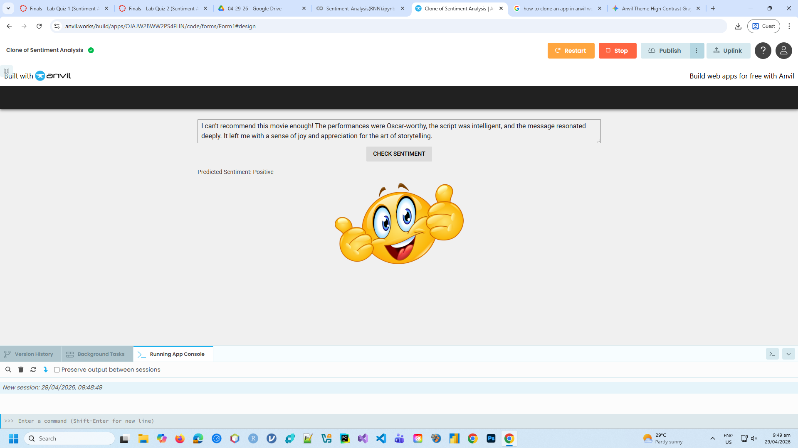
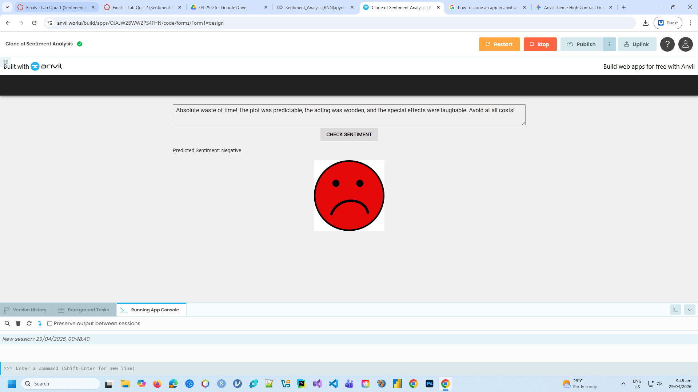

Finals - Lab Quiz (Sentiment Analysis)
Description: A Natural Language Processing (NLP) deep learning project focused on building a Recurrent Neural Network (RNN) to analyze textual data and classify movie reviews as either positive or negative.
Objectives/Purpose:
- To transition from image-based Computer Vision tasks into sequential text analysis.
- To load and preprocess the IMDB movie review dataset, managing vocabulary sizes and integer-encoded words.
- To handle variable-length text inputs using sequence padding techniques.
- To implement an Embedding layer and an RNN architecture designed to retain contextual memory across a sequence of words.
- To evaluate the model's accuracy on custom, real-world sentences.
Key Features
- Word Embeddings: Utilized a Keras
Embeddinglayer to map sparse integer representations of words into dense, continuous vectors, allowing the network to mathematically capture semantic meaning and word relationships. - Sequential Data Processing: Deployed a Recurrent Neural Network (RNN) architecture capable of maintaining an internal "memory" state, ensuring the model analyzed the text in order and understood context (e.g., how the word "not" affects the word "good").
- Binary Text Classification: Condensed the sequential text features into a single continuous probability score using a Sigmoid activation function to classify the text's overall sentiment.
Important Code Blocks
1. Text Sequence Padding
Neural networks require fixed-size input tensors, but human sentences vary in length. This snippet uses Keras's sequence utilities to truncate long reviews and pad short reviews with zeros, standardizing the input arrays.
from tensorflow.keras.preprocessing import sequence
# Pad sequences to ensure uniform input length for the RNN
max_words = 500
X_train = sequence.pad_sequences(X_train, maxlen=max_words)
X_test = sequence.pad_sequences(X_test, maxlen=max_words)2. RNN Architecture Definition
The model pipeline begins with an Embedding layer to generate word vectors, followed by the Recurrent layer to process the sequence, and finishes with a Dense binary classifier.
import tensorflow as tf
model = tf.keras.models.Sequential()
# 1. Word Embedding Layer
model.add(tf.keras.layers.Embedding(input_dim=10000, output_dim=32, input_length=max_words))
# 2. Recurrent Neural Network Layer
model.add(tf.keras.layers.SimpleRNN(units=32))
# 3. Output Classification Layer
model.add(tf.keras.layers.Dense(units=1, activation='sigmoid'))
model.compile(optimizer='adam', loss='binary_crossentropy', metrics=['accuracy'])Screenshots & Results

Positive Sentiment Evaluation

Negative Sentiment Evaluation
Observations:
- The RNN successfully mapped custom text inputs to their appropriate sentiments. It correctly identified the underlying tone of the test sentences, proving that the word embeddings and recurrent states accurately captured linguistic context rather than just analyzing isolated keywords.
Tools & Technologies
- Languages: Python 3
- Libraries/Frameworks: TensorFlow/Keras (SimpleRNN, Embedding, sequence padding), NumPy
- Datasets: Keras IMDB Movie Review Dataset
- Platforms: Google Colab
Challenges & Solutions
Problems Encountered: Moving from image data to text data presented a fundamental dimensionality problem. An image has fixed pixels, but text is sequential and highly variable in length. Furthermore, neural networks cannot natively ingest raw strings; they only understand numbers.
How I Solved Them: I utilized the pre-tokenized IMDB dataset, which provided text already converted into integer indices based on word frequency. To solve the variable length issue, I implemented sequence.pad_sequences() to strictly enforce a maximum length (e.g., 500 words), padding shorter reviews with 0s and truncating longer ones, making the data mathematically viable for the network.
Learning Reflection
What I Learned: I learned the distinct differences between CNNs (which look for spatial patterns) and RNNs (which look for sequential/temporal patterns). I also gained a solid foundational understanding of how NLP pipelines function, from integer encoding and sequence padding to generating semantic word embeddings.
Skills Gained: Natural Language Processing preprocessing, implementing Embedding and SimpleRNN layers in Keras, and evaluating binary text classifiers.